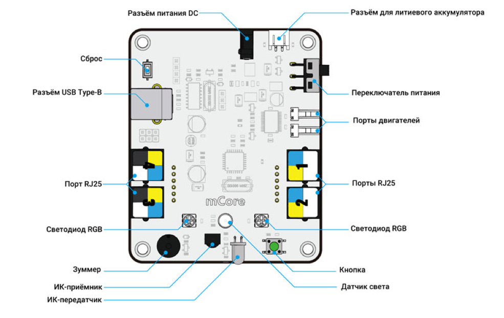
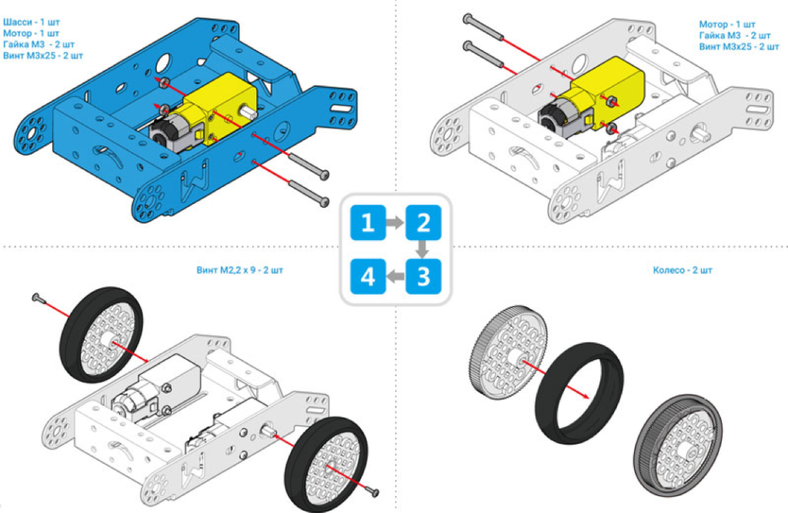
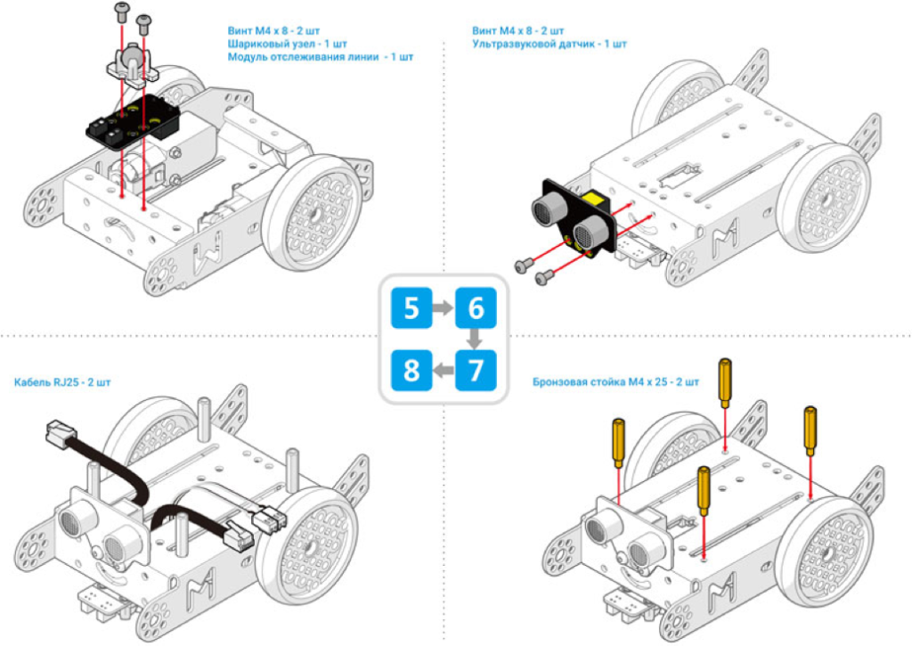
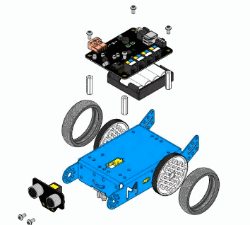
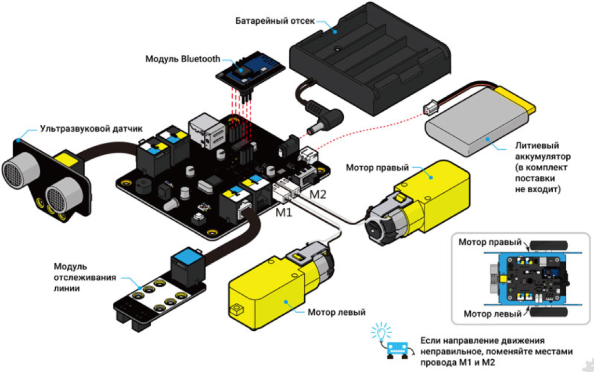

Сьогодні більшість прогресивних шкіл у різних країнах світу обирають для учнів стратегію STEAM-навчання, що охоплює природничі науки (Science), технології (Technology), технічну творчість (Engineering), мистецтво (Art) та математику (Mathematics). Така освіта вчить ще зі шкільної лави вдало комбінувати отримані знання для вирішення реальних життєвих ситуацій. Як наслідок, дитина виходить у дорослий світ розумнішою і не так сильно боїться проблем та труднощів.
Робототехніка – корисна «іграшка» вдома і в сучасній школі.
Чому вивчення робототехніки важливе:
mBot – це навчальний робот від компанії Makeblock для початківців, що дозволяє в ігровій формі навчатися робототехніки, програмування та основ електроніки. Цей робот є найдешевшим із цієї серії роботів. Конструктор простий у складання та дозволить вам почати навчання без покупки додаткових частин.
1. mCore
mCore – це плата управління роботами Makeblock , сумісна з Arduino , але зручніша для початківців. На ній розміщені всі необхідні компоненти, перемикачі, тому при роботі з конструктором вам не доведеться нічого паяти.
Складання:
  Підключення:
Електроживлення mBot можливе від чотирьох батарей типорозміру АА або від літієво-іонного акумулятора 3,7В (з можливістю заряджання від кабелю USB)
mBlock – графічне програмування
mBlock – це модифікація відкритого програмного забезпечення Scratch 2.0, яка створена спеціально для роботи з навчальними конструкторами Makeblock. З ще допомогою Ви можете створити програму для свого робота, яка отримує дані від різних датчиків робота та керує ним залежно від показань цих датчиків або відповідно до вашого алгоритму.
Завантажити mBlock можна за посиланням
Доступні версії: